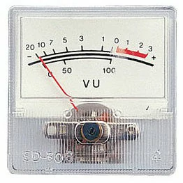

Le Système Nerveux
Le fonctionnement d’u organisme nécessite une communication entre les différents organes.
Le système nerveux constitue du centre nerveux et des nerfs assure la communication nerveuse.
I – Centre nerveux (névraxe) : composé de l’encéphale et la moelle épinière.
1 – Encéphale : entourer par un tissu osseuse et manège (Ruer mère, pie-mère et arachnoïde) les tissus osseuses et les manèges leurs rôles est la protection du centre nerveuse.
L’encéphale est formé par (cerveau, cervelet et bulbe rachidien).
Rôle de Centre Nerveux :
+ Traducteur
+ Coordinateur
+ Intégrateur
+ Amplificateur
+ Analyseur
2 – Moelle épinière : c’est un cordon long blanc qui loge dans la colonne vertébrale entouré par les manèges et les tissus osseuses et former par deux substances grise et blanche.
II – Tissu nerveux : c’est l’ensemble des cellules nerveux qui regroupe en unité fonctionnelle.
1 – Substance grise : la structure des substances grises montre des corps cellulaires relier par les cellules gliales pour la nutrition du tissu nerveux.
2 – Substance blanche : renferme les axones nerveux myélinisé.
3 – Nerf : ensemble des fibres nerveuses.
4 – Cellule nerveuse (Neurone) : ce sont des cellules constituent l’unité de fonctionnement du système nerveux. Les neurones sont spécialisés dans la condition de l’influx nerveux. La cellule nerveuse ne se divise pas.
5 – Quelque types de corps cellulaire selon leurs localisations :
6 – Ganglion nerveux : c’est un tissu conjonctif qui renferme des corps cellulaires en dehors de centre nerveux.
7 – Les fibres nerveuses : la fibre nerveuse est un axone ou dendrite d’une cellule nerveuse. Les types des fibres nerveuses sont :
- Fibre myélinisée
- Fibre amyélinisée
8 – Synapse : c’est la zone de contact entre l’arborisation terminale d’un neurone et une autre cellule nerveuse.
Synapse comporte une cellule présynaptique et une cellules postsynaptique et une fente synaptique.
Il existe trois types des synapses neuroneuronique :
- Synapse axo-dendritique.
- Synapse axo-somatique.
- Synapse axo-axonique.
+ Propriété du tissu nerveux - le tissu nerveux a deux propriétés sont :
- Excitabilité.
- Conductibilité.
I – Excitabilité :
A – Excitant : on peut exciter les nerfs par :
- Un excitant mécanique (piqûre ou pincement)
- Un excitant thermique (contact avec corps chaud ou corps froid)
- Un excitant chimique (acide ou rayon)
- Un excitant électrique (courant) : mieux que les autres excitants car on peut doser l’intensité avec précision.
B – Conditions nécessaire pour un excitant efficace :
- Une intensité minimale (seuil) : c’est la valeur minimale de l’intensité d’une stimulation nécessaire pour obtenir une réponse d’une fibre nerveuse excitable, si l’excitant est électrique le seuil est appelé Rhéobase.
- Temps utile : c’est la durée minimale nécessaire pour un excitant, est égale à Rhéobase pour donner une réponse. La variation brutale de l’intensité.
- Chronaxie : c’est une durée nécessaire pour un excitant est égale à doubler Rhéobase pour qu’il donne une réponse.
II – Conductibilité :
Certains éléments rendent la cellule nerveuse plus ou moins excitable comme :
- La drogue.
- La ligature.
- La chaleur.
Les messages nerveux (influx nerveux) sont des ondes de dépolarisation qui se propagent le long de la membrane de la fibre nerveuse.
Donc l’influx nerveux est un phénomène vitale orienté d’une cellule présynaptique vers une cellule postsynaptique.
On peut constater que l’influx nerveux se propage dans deux sens si la fibre nerveuse est isolée.
Les instruments électriques pour étudier l’influx nerveux.
1 – Galvanomètre : former par une boite et une aiguille et deux électrodes réceptrices placer sur la fibre nerveuse.

2 – Oscilloscope : l’oscilloscope cathodique permet d’amplifier les variations de potentiels et les enregistrer.
Cet appareil comprend des tubes et un générateur des électrons et deux plaques reliées avec les électrodes réceptrices et un écran d’enregistrement.
A – Potentiel de Repos (PR) : pour étudier la nature précise des potentiels la fibre nerveuse géante calmar est souvent utiliser par les neurologues sont de diamètre 1mm.
Elle permet de placer les électrodes réceptrices et les électrons excitatrices.
Le potentiel de repos est la différence de potentiel qui existe entre la surface de la fibre nerveuse et son intérieur cette DDP est toujours négative et de l’ordre de -70mV.
La surface de la fibre est chargée positivement alors que le milieu intérieur est chargé négativement.
- Origine ionique de potentiel de repos :
Le liquide intracellulaire est plus riche en ion de K+ qu’en ion de Na+ alors que le liquide extracellulaire est plus riche en ion de Na+ qu’en K+, donc le potentiel de repos est expliqué par une répartition inégale de charge et des ions de part et d’autre de la membrane de la fibre nerveuse.
Il existe des structures appelé les canaux de voltages dépendant des ions (CVD) pour la régulation de perméabilité des ions.
NB : le CVD au moment de potentiel de repos sont fermé.
B – Potentiel d’action (PA) : aspect électrique de l’influx nerveux.
- Potentiel d’action diphasique : l’étude peut être faite sur une fibre géante de calamar, les électrodes réceptrices R1 et R2 sont placées à la surface de la fibre nerveuse, l’excitation électrique est suivie par l’apparition sur l’écran de l’oscilloscope d’une onde diphasique.
- Analyse de potentiel d’action diphasique :
A : Artefact – L’instant de l’excitation.
AB : Temps de latence – c’est la durée nécessaire pour que l’influx nerveux passe d’une électrode excitatrice vers premier électrode réceptrice.
BC : Phase de dépolarisation – phase au cours de laquelle négativité est remarqué en R1.
CD : Phase de repolarisation – au cours de laquelle la négativité a dépassé R1.
- Potentiel d’action monophasique : on peut enregistrer les potentiels monophasiques dans les quatre cas suivants.
- Electrode sur la surface et l'autre pénétrer.
- Electrode sur la surface et l'autre au reference.
- Electrode sur la surface et l'autre sur la zone detruite.
- Electrode pénétrer et l'autre sur une zone detruite.
- Origine ionique de potentiel d’action : lorsque le potentiel d’action est en -70mV, la membrane est imperméable aux ions Na+ et K+ à trouver le CVD qui se forme.
Au cours de ma phase de dépolarisation la perméabilité membranaire augmente vis-à-vis aux ions Na+ due à l’ouverture de CVD de Na+ ce qui entraine une entrée massive de Na+ à l’intérieur de la fibre, ces canaux ne s’ouvrent que si la fibre est atteinte par un potentiel seuil.
Au cours de la phase de repolarisation, la perméabilité membranaire aux ions Na+ diminue mais augment vis-à-vis aux ions K+.
Ceci est expliqué par l’ouverture de CVD de K+ d’où la sortie de K+.
La phase d’hyperpolarisation est expliquée par l’ouverture prolonger de CVD de K+.
C – Potentiel local (Potentiel membranaire) : les stimulations infraliminaires engendrent des potentiels locaux qui augmente l’amplitude et nécessite pas une intensité de seuil et non Propageable et marquer par l’ouverture de CCD.

Remarque :
Période réfractaire : la membrane de la fibre nerveuse est inexcitable aux moments et juste après un potentiel d’action c’est la période réfractaire.
+ Synapse Neuroneuronique : zone de contact entre l’arborisation terminale d’un neurone et une autre cellule nerveuse.
L’excitation d’une cellule présynaptique provoque l’arrivé d’un potentiel présynaptique et l’ouverture de CVD de Ca2+ et diffusion de ces ions dans des milieux intracellulaires.
Les ions de Ca2+ déclenche l’exocytose de la vésicule synaptique et la libération de neuro-transmetteur (Acétylcholine) dans la fente synaptique.
Les neuro-transmetteurs se fixent sur le récepteur de la membrane postsynaptique et l’ouverture de CVD des ions et la modification de la perméabilité membranaire vis-à-vis aux ions Na+ et K+ selon la nature de la synapse d’où la modification des potentiels membranaire a un potentiel postsynaptique.
Le neuro-transmetteur est rapidement dégrader dans la fente synaptique par un enzyme appelé Acétylcholistrase.
Il existe deux types des synapses :
1 – Synapse excitateur : le médiateur chimique appelé Acétylcholine.
2 – Synapse inhibitrice (GABA) : est un neurotransmetteur inhibitrice qui a pour objectif d'inhibé l'influx nerveux en provoquant un PPSI (Potentiel Pré-Synaptique Inhibitrice).
Remarque :
- Temps de latence synaptique : il existe un retard du temps après le passage de l’influx nerveux par la synapse c’est le délai synaptique.
+ La sommation : la naissance d’un potentiel d’action est expliquée par une sommation des différents potentiels présynaptique crée au niveau de synapse, cette sommation à surement donner un PPSE (Potentiel Pré-Synaptique Excitatrice) qui atteint le seuil, il existe trois types sommations :
- Sommation spatiale : c’est l’effet d’utiliser deux excitations de différentes intensités.
- Sommation temporelle : c’est l’effet d’excité avec deux intensités de mêmes.
- Sommation spatio-temporelle : c’est l’effet d’utiliser deux excitations de mêmes intensités et autre différentes.
N.B : Tout nerf qui est capable à faire la sommation sa propriété est Intégrateur.
On utilise des Oscilloscope pour enregistrer les Potentiels.
Remarque :
Les types de canaux :
- Canaux de fuites : sont toujours ouverte.
- Canaux Chimio-Dépendant (CDD) : existe sur la membrane de la fibre et son ouverture ne demande pas le seuil et il traduit le PPSE.
- Canaux de Voltage Dépendant (CVD) : existe sur l’axone de la fibre et son ouverture demande une intensité de Rhéobase et son ouverture explique le potentiel d’action PA.
- Canaux de Ca2+ : existe sur la membrane présynaptique et permet la rentrée de Ca2+ dans la cellule synaptique pour la conduction des messages nerveux.
+ Comparaison entre potentiel de la fibre et du nerf :
A – Fibre : si on stimule une fibre par des excitations son intensité est croissante on constate que si l’intensité augment l’amplitude de potentiel d’action reste constante donc la fibre est Obéit à la loi de tout ou rien.
B – Nerf : si on stimule le nerf par des excitations ses intensités sont croissantes on remarque une augmentation de l’amplitude de potentiel d’action parallèlement avec l’augmentation de l’intensité, donc le nerf est Obéit à la loi de recrutement.
+ Mode de propagation de l’influx nerveux :
A – Fibre amyélinisé : la conduction de l’influx nerveux se fait de proche en proche elle est dite conduction continue.
B – Fibre myélinisé : la conduction se fait d’un nœud de Ranvier vers l’autre en sautant les segments myélinisé (isolent électrique) elle est dite mouvement Saltatoire.
C – Les facteurs de variation de la vitesse de l’influx nerveux :
- La vitesse de l’influx nerveux augmente avec l’augmentation de diamètre de l’influx nerveux.
- La vitesse de l’influx nerveux augmente avec l’augmentation de température du milieu.
- La vitesse de l’influx nerveux augmente selon la nature de la fibre nerveuse.
Remarque :
Le potentiel d’action complexe :
- Trois groupes des fibres différents selon le nombre et la vitesse d’influx nerveux.
- Trois groupes des fibres différents selon le nombre et diffèrent selon la présence de synapse.
+ Calcule de la vitesse de l’influx nerveux :
V = x/t or V = d/t
II – Activité Réflexe : est une réaction motrice involontaire représente une réponse a une stimulation, les caractéristiques des réflexes sont :
- Automatique.
- Prévisible.
- Involontaire.
- Spécifique.
- Stériotipique.
Le message nerveux au cours du réflexe passe par un arc réflexe, il existe deux types de réflexe :
- Réflexe innée (myotatique) : exemple reflexe rotulien ou reflexe achilienne.
- Réflexe conditionnelle.
1 – Réflexe myotatique : c’est la contraction ou relâchement du muscle à la suite de la stimulation ou étirement, Les organes qui interviennent dans les réflexes sont :
- Organe récepteur (lieu de naissance de l’influx nerveux) : La peau.
- Un conducteur sensitif : conduisant le message nerveux du récepteur vers le centre nerveux.
- Centre nerveux : lieu de transformation d’un influx sensitif vers un influx moteur.
- Un conducteur moteur : conduisant l’influx du centre vers les organes effecteurs.
- Organe effecteur : qui exécute les ordres.
+ Trajet de l’influx nerveux au niveau de réflexe :
- Expérience de Magendie : il expérimente sur les nerfs rachidiens, chaque nerf rachidien comprend deux racines Dorsale et Ventrale.
- La section des racines dorsales (postérieur) : provoque l’absence de sensibilité donc il renferme des fibres sensitives.
- La section des racines ventrales (antérieur) : provoque l’absence de la motricité donc il renferme des fibres capables a excité les fibres motrices.
- Expérience de Waller : il expérimente sur un nerf rachidien.
- Il sectionne sur les deux côtes de ganglion spinal et il remarque la dégénérescence des deux côtes donc le corps cellulaire sensitifs localise dans le ganglion spinal.
- Il sectionne la racine ventrale entre le moelle épinière et nerf rachidien et il remarque la dégénérescence du bout périphérique et la régénérescence du bout centrale donc le corps cellulaire moteur est localisé dans la substance grise.
Le message nerveux aux cours de réflexe passe par trois neurones :
- Neurone sensitif.
- Neurone d’association.
- Neurone moteur.
+ Réflexe d’étirement :
Remarque :
• Le fuseau neuro-musculaire (FNM) : est la fibre moteur sensible qui transmet les influx nerveux de muscle vers le centre nerveux.
2 – Réflexe conditionnelle : est une réaction de l’organisme qui déclenche en présence d’un stimulant conditionnelle en raison de l’association de ce stimulant a un autre stimulant inconditionnelle qui provoque spontanément cette réaction.
- Expérience de Pavlov :
+ Délai synaptique : c'est le temps nécessaire pour la conduction d'un signal à travers une synapse, ce délai est généralement compris entre 0,3 et 0,5 millisecondes. Elle permet de déterminer les nombres de synapses par la formule : (Temps mise en jeu) / (Delai Synaptique) = Nombre des synapses